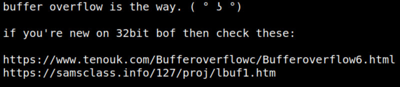
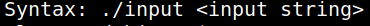

5.1 Buffer Overflow Exploit
1. As you can see there's a file called “note.txt”. Let's see its content. On the reverse shell run the following command.
clapton@debian:~$cat note.txt
Output:

It looks like we have to use the buffer overflow for privilege escalation.
2. There's a file called “input”. Run it.
clapton@debian:~$./input
Output:

it is requiring an argument of string.
So, you have to insert a shell as the argument.